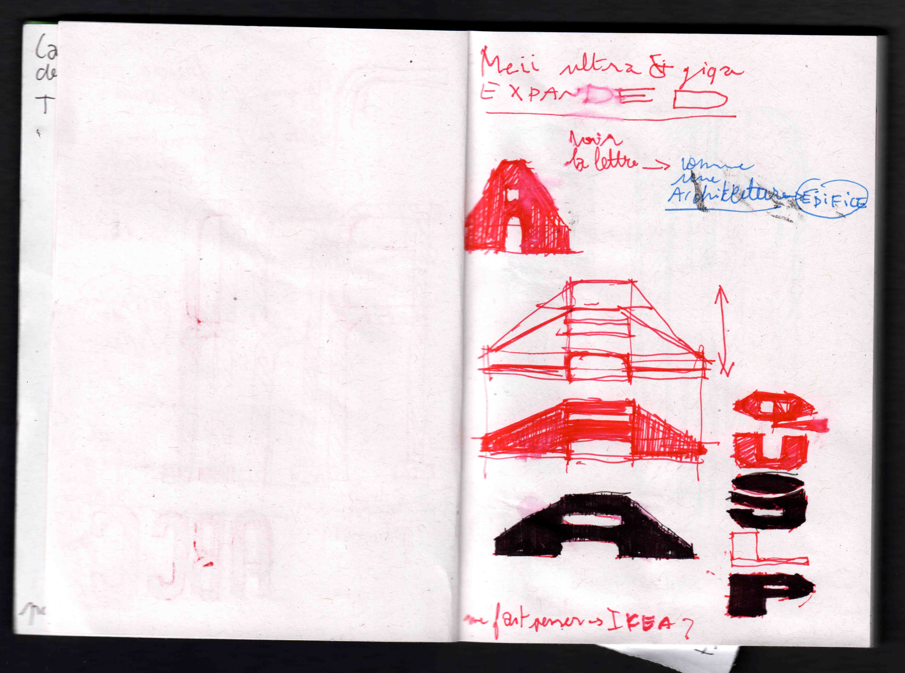
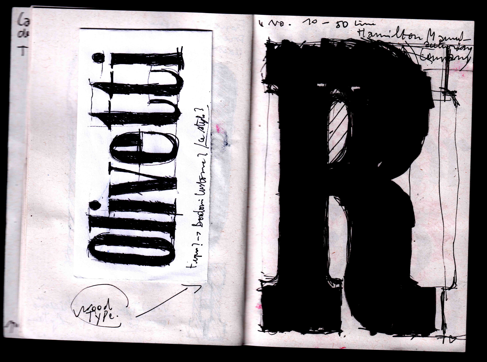
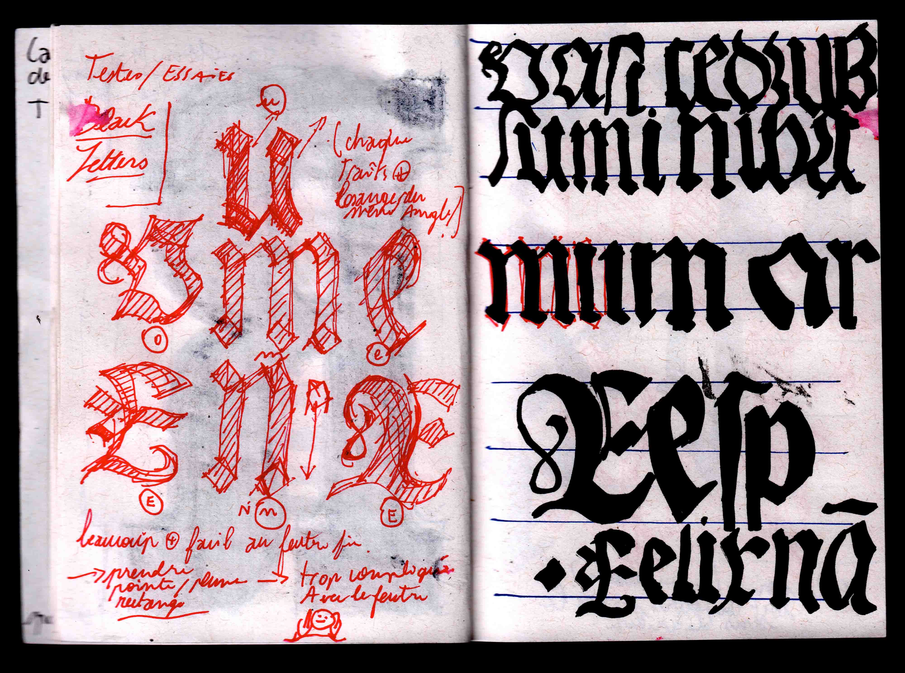
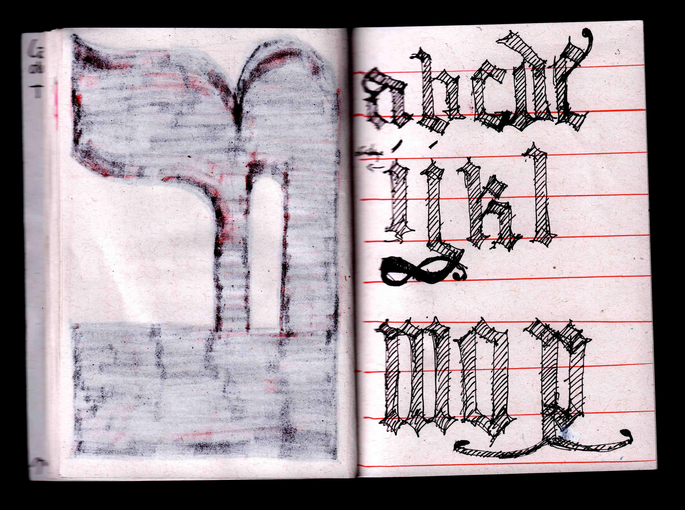
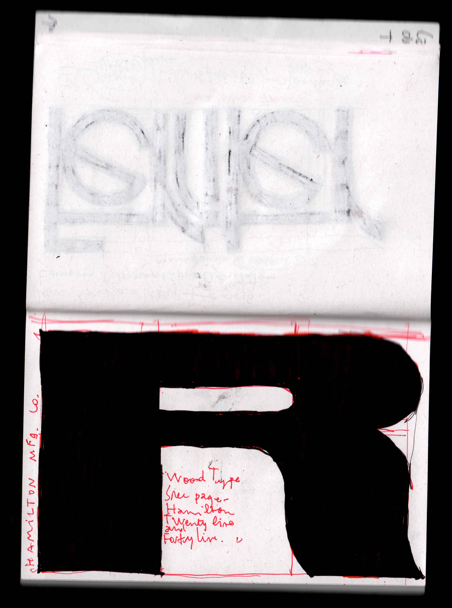
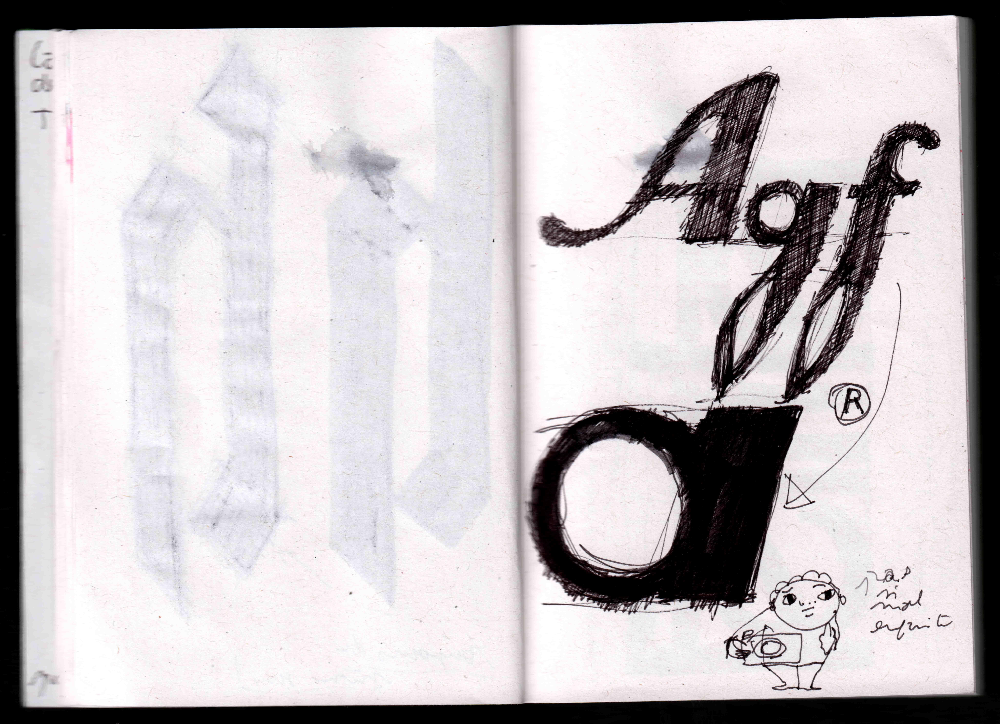
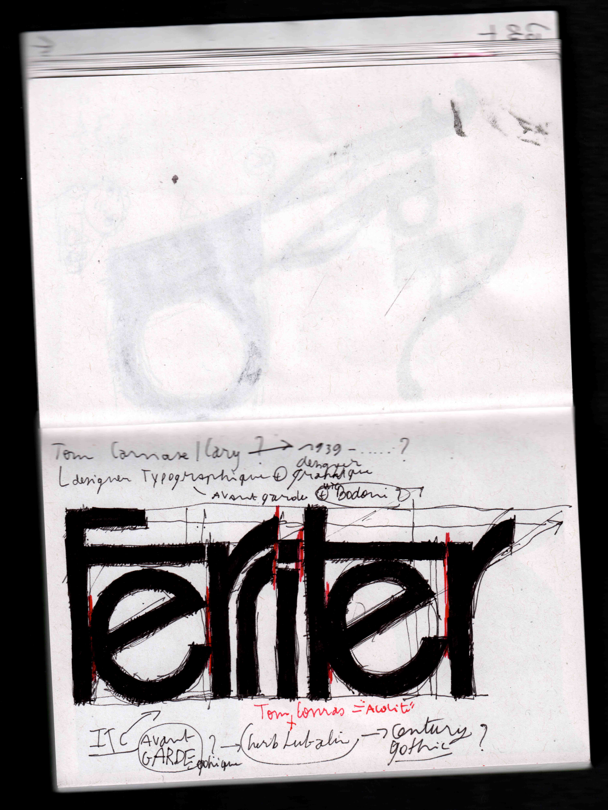

carnet-typo
Il s’agit d’un carnet où j’explore et étudie tous types de caractères et logotypes, par le dessin d’observation. Cela enrichit mes références en termes de formes et de tracés.







←
2026